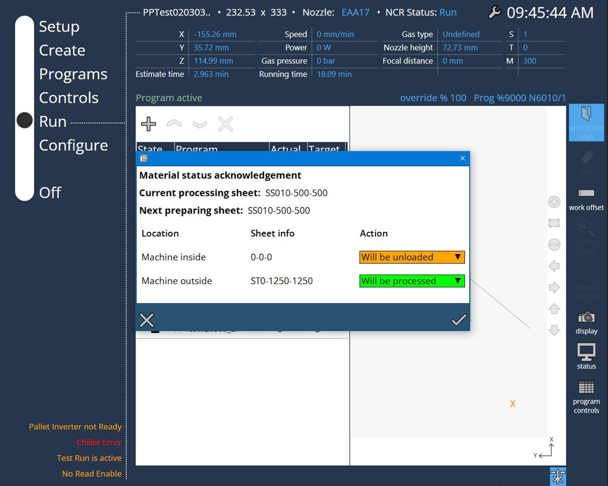

Munkafolyamat
1. Gyártási tervcsomagok hozzáadása
Miközben a gép készen áll a gyártásra, nyomja meg a „+” gombot a tervezett gyártási programok gyártási tervlistába való felvételéhez.

A hozzáadási eljárás során a gyártási tervcsomagok a helyi lemez elérési útvonalán is tárolásra kerülnek.

A Gyártási terv mappában az összes importált gyártási tervcsomag tárolásra kerül.

Minden egyes gyártási tervcsomag létrehoz egy külön mappát, hogy tárolja a részfeladatokat, amelyek közvetlenül betölthetők az egyes feladatok feldolgozása esetén.

2. A mennyiség beállítása szükség esetén
A részfeladatok célmennyisége az offline programozásból származik és a gépen is szerkeszthető, amíg a gyártási terv nincs futtatás üzemmódban.
A tényleges és a célmennyiségek módosításához egy számjegybillentyűzet jelenik meg:

3. A gyártási terv feloldása
Válassza ki a feldolgozásra váró csomagot, majd nyomja meg a „Zárol” szimbólumot a gyártási tervcsomag feloldásához.

4. Gyártási terv futtatása
Nyomja meg a „START” gombot a gyártási terv futtatásához. A megerősítéshez megjelenik az Anyagállapot nyugtázása ablak. Ellenőrizze az aktuális állapotot és nyomja meg a "√" gombot a folytatáshoz. A raklapcsere megfelelően végrehajtásra kerül és a megmunkálás megkezdődik.
